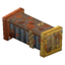
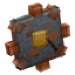
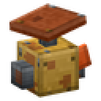

A Hytale technology & magic mod
Craftory starts in a goblin scrapyard, with cranks, burners and pipes held together with hope. Then it climbs into wired-up crystals and living Glimmerwells you hunt, calm, jar and carry home through the storm. It's built for two friends in co-op from the first block.
Early access: Tiers 1–3 are in testing on live servers.
Every tier is unlocked by doing something in the world, not just crafting it. Pick a tier.
Everything in the early tiers. Filter by what it does.
Power comes in grades. A machine accepts its grade or anything higher, so upgrading your generators keeps old machines running, and some get faster.
Wells are living sources of magic. They're born in storms, rain and battles, and they don't want to come home with you.

You can see the items rattling through. Pipes carry an item lane and a fluid lane. Paint daubs sort items by colour, and the Snatcher Claw pulls from chests and machines.

Stack Sloshtanks to make bigger tanks. Pipes pull water from source blocks. The Gutter Boiler turns water into Pressurised Fizz, and Gasbags store it (keep fire away).

Ride a tube network between named stations, or get fired from a Hurl Cannon at a Catch Net. Rides cost a little Fizz. You can't board one while carrying a jarred Well.
/craftory crew create, then invite your friend. Research, Notebook pages, Insight and tier progress are shared."You hold the Damper line, I'll get the stakes in, then we run it home before the rain hits."
the kind of evening Craftory is built forcraftory-core and craftory-tech in the server's mods folder. Tech needs Core.git clone https://github.com/brettsaunders21/Craftory-Hytale
cd Craftory-Hytale
./gradlew setupHytaleDev # one-time Hytale sign-in
./gradlew build
./gradlew runAllMods # dev server with both pluginsArt in this guide is rendered from the mod's own models and textures. In-game lighting will look different.